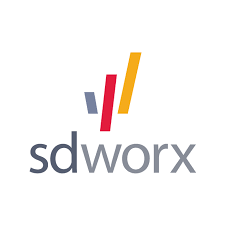
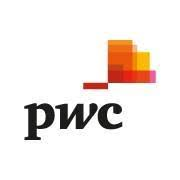

Sponsors Details
Spoon Consulting

Spoon Consulting provides IT and back office services related to ERP technologies, namely Oracle® ERP Cloud as well as Cloud technologies, namely Sales and Service Cloud , Force.com , Heroku and ISV Force.Learn more about Spoon Consulting here
State Infomatics Limited
SIL is an expert company with a team of dedicated professionals. Over and above being seasoned experts certified in key technologies, we deliver IT solutions and services with the highest standards by enhancing technical expertise with sound industry knowledge and market acumen for Mauritius and Africa as well as by focusing on our client’s present and future needs. SIL’s IT solutions and systems are built on leading technologies from global leaders and they support economic, business and social development on national scales. We deliver projects based on such technologies, so as to optimise the business value that IT can deliver to our clients.Learn more about SIL here
SD Worx
SD Worx has been helping mid-market and enterprise businesses take care of their people for over 75 years, supporting some of the world’s best-loved brands through the complexities of modern workforce management with innovative payroll, HR and workforce management solutions and services.Learn more about SD Worx here
Accenture

ccenture stands ready to provide the strategy and consulting support for you to navigate this reinvention journeys. We bring functional and industry expertise, unparalleled insights, actionable recommendations, and the commitment and know-how to unlock 360° value across your organizations. We manage complexity. And we help you become faster, more innovative and more resilient. Learn More about Accenture here
PWC
At PwC, our purpose is to build trust in society and solve important problems. We’re a network of firms in 152 countries with over 327,000 people who are committed to delivering quality in assurance, advisory and tax services. PwC refers to the PwC network and/or one or more of its member firms, each of which is a separate legal entity.Learn more here
Tylers

Tylers is now a leader in Information Security and also a full fledge provider from Training, Consultancy, Implementation, and Development up to complete Outsourcing of IT. Our team of certified engineers with years of experience in the IT industry is committed to providing our customers state-of-the-art solutions that are cost-effective, robust, and have a strong focus on IT Security. Tylers Training Department is in partnership with EC-Council and ISACA to provide advanced Training mostly ending with professional Certifications. As a Prometric Testing Center, many professional Certifications can be done on Tylers` premises. Company Structure.Learn More here
MCB Consulting

Since 2014, we have provided business advisory services, deployed technology-centric solutions, and implemented training programs in the banking and non-banking sectors to help over 90 clients in 42 countries. Our track record in maintaining trusted relationships is at the center of our success; the expression of the humane and professional attitude we adopt in business is a reason why world-leading brands and solution providers choose to partner with us. Our clients know they can rely on us to guide them in complex transformations and feel reassured by the dedication of our support team to help beyond the delivery of solutions.Learn More here